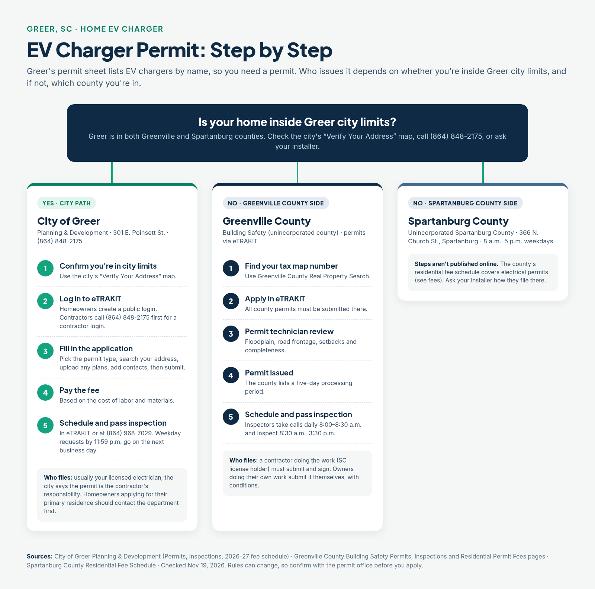
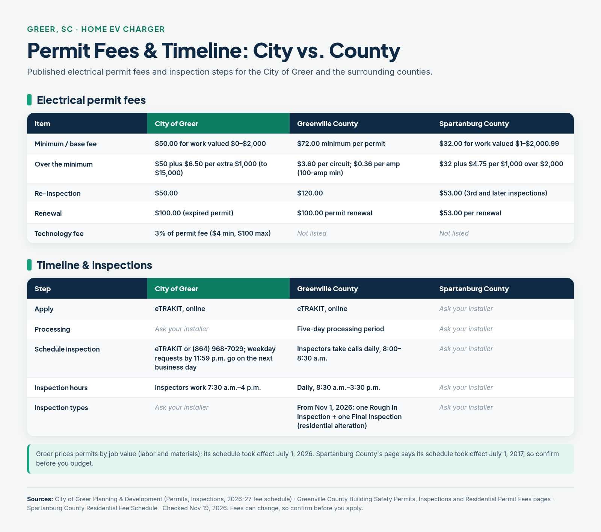

Greer EV Charger Permit Guide
Last Updated On: November 19, 2026
Installing a Level 2 charger at a Greer home means adding electrical wiring, and that needs a permit and an inspection. Greer is a bit trickier than most towns: the city sits in both Greenville and Spartanburg counties, and a Greer mailing address doesn't mean you're inside city limits. Your power company also matters, because many Greer homes get electricity from Greer CPW, not Duke Energy. This guide covers who issues the permit, how to apply, what it costs, how inspections work, and when Duke's Charger Prep Credit applies.
For the city vs county basics, see our permits overview: city vs county. If you're in Greenville itself, see the Greenville EV charger permit guide.
Do you need a permit for a home EV charger in Greer?
Yes. The City of Greer's "When is a Permit Required?" sheet lists EV chargers by name among the projects that need a permit (City of Greer: When is a Permit Required? (PDF)). The city's permits page says permits must be obtained before work begins, and that getting them is the contractor's responsibility (City of Greer Planning & Development: Permits).
Outside city limits, Greenville County lists "all electrical" work as needing a permit (Greenville County Building Safety: Permits).
City of Greer or the county: who issues your permit?
It depends on whether the property is inside Greer city limits, and if not, which county it's in.
- Inside Greer city limits (either county): City of Greer Planning & Development issues the permit.
- Outside city limits, Greenville County side: Greenville County Building Safety issues it.
- Outside city limits, Spartanburg County side: Spartanburg County issues it.
How to check if you're inside Greer city limits
- Enter your address in the city's Verify Your Address map, linked from the city's permits page.
- Or call Planning & Development at (864) 848-2175.
- Your installer can usually tell you too, since they pull permits in both counties.
How to apply for an EV charger permit in the City of Greer

- Confirm you're in city limits with the Verify Your Address map.
- Log in to eTRAKiT. Greer takes permit applications online through eTRAKiT. Homeowners create a public login. Contractors call (864) 848-2175 first, and the city checks their SC LLR license before issuing a contractor login (City of Greer: How to Apply for an Online Permit (PDF)).
- Fill in the application. Pick the permit type, search your address (the city's GIS help line is (864) 879-4307), upload any plans, add contacts, then review and submit.
- Pay the fee. The fee is based on the cost of labor and materials (see fees below).
- Schedule and pass inspection. Request it in eTRAKiT or call the inspection line at (864) 968-7029. Requests made by 11:59 p.m. Monday through Friday go on the next business day's schedule (City of Greer: Inspections).
Who files it? Usually your licensed electrician. The city says getting the permit is the contractor's responsibility, and it checks that contractors are licensed, insured and bonded. If you're a homeowner applying for your primary residence, the city asks you to contact the department first, and it posts a Homeowner's Disclosure Statement.
Contact: City of Greer Planning & Development, 301 E. Poinsett St., Greer, SC 29651. Phone (864) 848-2175, email permits@cityofgreersc.gov. Office hours are 8 a.m. to 5 p.m. weekdays, and inspectors work 7:30 a.m. to 4 p.m. (City of Greer: Permits).
How to apply outside Greer city limits
Greenville County side
- Find your tax map number. The county says every permit application needs either a tax map number or an active permit number for the site (Greenville County Permits). Look it up on Greenville County Real Property Search.
- Apply through eTRAKiT. The county says all permits must be submitted through eTRAKiT. Setup steps are in the county's eTRAKiT user manual.
- Wait for review. A permit technician checks the application for floodplain, road frontage, setbacks and completeness.
- Get the permit issued. The county currently lists a five-day processing period.
- Schedule and pass inspection. County inspectors take calls daily from 8:00 to 8:30 a.m. and inspect from 8:30 a.m. to 3:30 p.m. (Greenville County Inspections).
Who files it? If a contractor does the work, the contractor (an SC license holder) must submit and sign the application. If you do the work yourself as the owner, you submit it, and owner-builder permits come with conditions listed on the county's page.
Spartanburg County side
Spartanburg County handles permits for unincorporated Spartanburg County. Its residential fee schedule covers electrical permits (see fees below), and its administration building is at 366 N. Church St., Spartanburg, SC 29303, open 8 a.m. to 5 p.m. weekdays (Spartanburg County Residential Fee Schedule). Ask your installer how they file there.
Greer EV charger permit fees
These are the published permit fees. Your exact fee depends on what's on the permit, so your installer will have the final number.
| Item | City of Greer | Greenville County (unincorporated) | Spartanburg County (unincorporated) |
|---|---|---|---|
| Minimum / base fee | $50.00 for work valued $0 to $2,000 | $72.00 minimum per permit | $32.00 for work valued $1 to $2,000.99 |
| Over the minimum | $50 plus $6.50 per extra $1,000 (to $15,000) | $3.60 per circuit; $0.36 per amp (100-amp min) | $32 plus $4.75 per $1,000 over $2,000 |
| Re-inspection | $50.00 | $120.00 | $53.00 (3rd and later inspections) |
| Renewal | $100.00 (expired permit) | $100.00 permit renewal | $53.00 per renewal |
| Technology fee | 3% of permit fee ($4 min, $100 max) | Not listed | Not listed |
| Source | City of Greer fee schedule 2026-27 (PDF) | County residential permit fees (PDF) | Spartanburg County residential fees |
Greer prices every permit by the value of the job: you or your contractor give the actual cost of labor and materials, and the city checks it against standard valuation tables. Greer's schedule took effect July 1, 2026. Spartanburg County's page says its schedule took effect July 1, 2017, so confirm it before you budget. For a typical charger circuit, the job value usually lands in the lowest one or two tiers.
How long it takes, and how inspections work

| Step | City of Greer | Greenville County (unincorporated) | Spartanburg County (unincorporated) |
|---|---|---|---|
| Apply | eTRAKiT, online | eTRAKiT, online | Not published |
| Processing time | Not published | Five-day processing period (county notice) | Not published |
| Schedule inspection | eTRAKiT or (864) 968-7029; requests by 11:59 p.m. Mon to Fri go on the next business day | Inspectors take calls daily 8:00 to 8:30 a.m. | Not published |
| Inspection hours | Inspectors work 7:30 a.m. to 4 p.m. | Daily, 8:30 a.m. to 3:30 p.m. | Not published |
| Inspection types | Not published | From Nov 1, 2026, residential alteration permits use one "Rough In Inspection" and one "Final Inspection" | Not published |
Sources: City of Greer: Permits, City of Greer: Inspections, Greenville County Permits, Greenville County Inspections.
If your project includes a panel upgrade, plan for more time, since your utility has to schedule the disconnect and reconnect.
Which power company serves you, and does Duke's Charger Prep Credit apply?
Greer has its own utility. Greer CPW serves about 26,000 electric customers in the city of Greer and some nearby unincorporated areas, and its site has a service availability map (Greer CPW: Electricity). Duke Energy Carolinas serves much of the Upstate, including Greenville County (Duke Energy news release), and two co-ops also serve the area: Blue Ridge Electric Cooperative (Greenville and Spartanburg counties among others) and Laurens Electric Cooperative. The name on your power bill tells you which one you have. See which utility serves you.
Duke Energy's Charger Prep Credit
If Duke is your utility, its Charger Prep Credit pays back part of the cost of getting your home ready for a Level 2 charger. It's a Duke program, so it doesn't apply if your power comes from Greer CPW or an electric co-op. Per Duke's page:
| Cost | Counts toward the credit? |
|---|---|
| Conduit, wiring and outlets supplying the charger | Yes |
| Panel upgrades and breaker installation | Yes |
| EV charger hardware | No |
| Hardware mounting and commissioning | No |
| Pulling permits and fees | No |
There are two ways to get it:
- Customer Credit Option: you pick your electrician, then submit the paid invoice to Duke and get a check. Duke says this covers prep work done in the last four months (Customer Credit Option).
- Contractor Credit Option: Duke helps you choose an electrical contractor, and the credit shows up as a discount on the contractor's final bill (Contractor Credit Option).
Your permit matters here. Duke's latest program report to the SC Public Service Commission says applications are marked invalid without a detailed invoice with separate labor and materials lines, a copy of the approved permit from the local permitting authority, a summary of any grant funding, and proof of EV registration. It also says the service address has to match the address on the EV registration (Duke semi-annual update to the SC PSC, Sept. 2026). Keep a copy of your approved permit.
Duke's page doesn't publish the dollar amount. Ask Duke or your installer for the current credit before you count on it. Read more in our Duke Charger Prep Credit guide.
FAQ
Do I pull the permit or does my electrician?
Usually your electrician. Greer says getting the permit is the contractor's responsibility. Homeowners applying for a primary residence should call Planning & Development at (864) 848-2175 first.
Does Greer really require a permit for an EV charger?
Yes. The city's "When is a Permit Required?" sheet lists EV chargers by name.
How do I know if my Greer address is in the city?
Use the city's Verify Your Address map. If you're outside city limits, check your county: Greenville County Building Safety or Spartanburg County handles the permit.
How much is an EV charger permit in Greer?
Inside the city, it's $50.00 for jobs valued up to $2,000, then $6.50 per extra $1,000, plus a 3% technology fee ($4 minimum).
How long does a permit take?
Greer doesn't publish a processing time. Once you have the permit, inspection requests made by 11:59 p.m. on a weekday go on the next business day's schedule.
I'm a Greer CPW customer. Can I get Duke's Charger Prep Credit?
No. The Charger Prep Credit is a Duke Energy program. Ask Greer CPW about any EV programs it offers.
Does Duke's credit pay for the permit?
No. Duke's page says pulling permits and permit fees don't count toward the Charger Prep Credit. You still need the approved permit to apply.
Find a licensed installer in Greer
Your installer will handle the permit, the inspection and, if you're with Duke, the paperwork for the credit. See the ranked list of EV charger installers serving Greer, or check what a typical job runs in our installation cost guide.